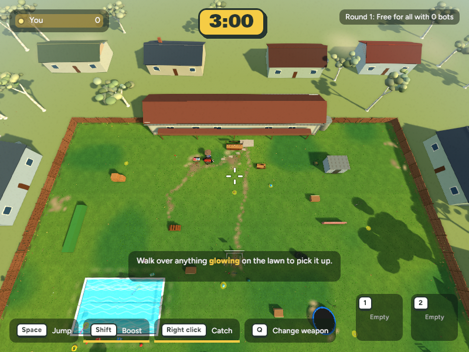
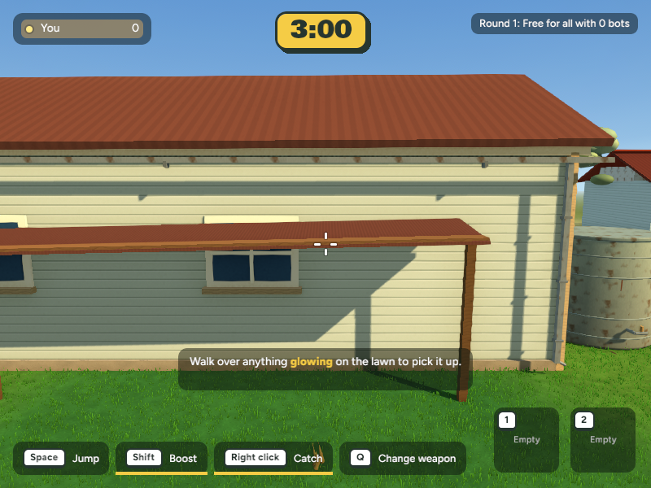
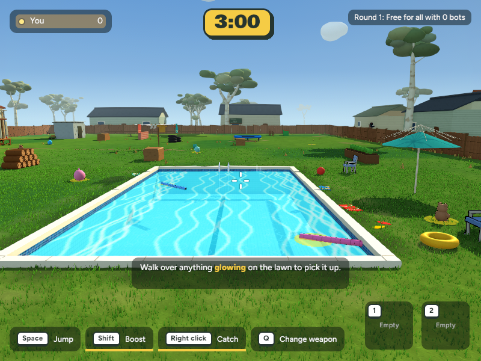
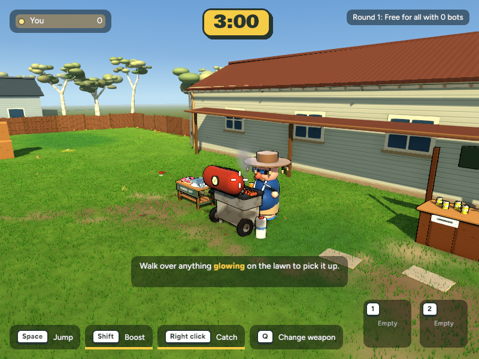

Backyard environment detail pass
Sequential visual update across the house, paling fence, gum trees, Hills Hoist, pool, shed, ground, and BBQ. All additions are decorative; existing collision, route, movement, and scoring rules are unchanged.

Whole-yard view showing the house, fence, gum-tree surroundings, pool, props, and worn walking details.

House front: roof edge, faded weatherboards, window and veranda trim, rain wear, and yard-facing details.

Pool coping and tile detail, with the existing clear route around the pool.

BBQ corner with its existing character props and the new pavers leading through the yard.
Checks: Rust workspace tests passed (718 passed, 0 failed, 2 ignored); browser inline JavaScript passes node --check. Browser visual inspection was unavailable because local browser use is disabled in Work settings. Blender’s asset libraries were off, so no third-party asset was imported.